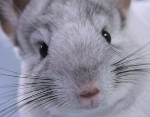

My Chinchilla
The Royal Persian Angora Chinchilla
The Royal Persian Angora Chinchilla (Angora for short) is estimated to have been developed around the early 1960's at a ranch in Fort Worth, Texas. They were originally considered for the pelt industry due to their quick maturation of 5 months (chinchillas usually hit maturity around 8-9 months) but were disregarded as a viable fur producer due to a problem with the fur being twice as long as other breeds and the clarity of the colour mutation proved difficult to produce. The Angora continued to be kept within selective chinchilla breeders of the pet industry and in 1997 two women purchased some of these chinchillas and spent a further 8 years heavily out-crossing the mutation to improve size, fur quality, temperament and subsequently named this breed of chinchilla The Royal Persian.
Although there are slight differences between the breeds of chinchilla, they all share the same characteristics:
- Bushy Tail
- Big Eyes
- Long Whiskers
- Large Ears
- Short Forelimbs
- Herbivore Eating Habits
- Soft Fur
Other Chinchilla Facts:
- Predators - Owls, Snakes, Hawks, Mountain Lions, Foxes and ultimately the Pelt Trade.
- Life Span - Chinchillas can live up to 20 years although 10-12 is average.
- Weight - Baby chinchillas (kits) weigh 35 grams. A male chinchilla weighs approximately 500-600 grams and a female is much larger between 500 - 700 grams.
- Gestation Period - Average 111 days (can vary between 105-128 days) producing 2-3 offspring per litter - predominately twins/triplets. A female's estrus cycle is approximately every 30-40 days but can also vary between 16-69 days. Click here for a standard 111 day gestation chart.
- Teeth - A chinchilla has 20 teeth from birth (16 molars, 4 incisors - no canines), which continually grow throughout their lifetime.